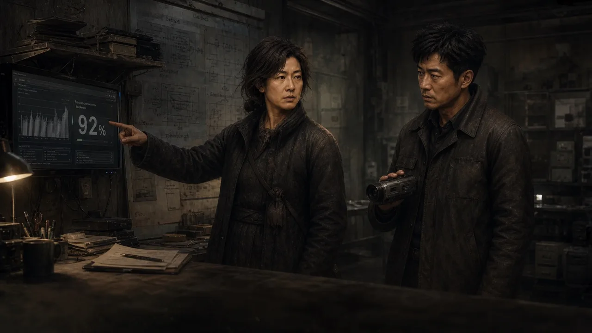

부모님의 발표 연습
복원 영상
마지막 문장까지 복원했다.
복원된 마지막 부분 다시 읽기
엄마우리가 제안하는 것은 종료 장치가 아닙니다. 이유 공개, 인간 책임자의 서명, 당사자의 이의 제기. 예측과 실행 사이에 사람을 다시 놓는 일입니다.
수원에서 검증키 확인
성곽 공동체 · 주변 탐색 · 준비 30분
남겨 둔 기록
엄마의 발표 원고를 복원했다. 천리안은 사람을 미래 파급으로 평가했고, 부모는 이유 공개·인간 서명·이의 제기를 되돌리려 했다.
다음에 읽을 기록은 「교환소 앞 달구지의 검증키」. 지금 가는 공주가 아니라 수원 성곽 공동체에서 확인한다.
이어서 공주로.
세종 → 공주 · 6km 남음
DAY 3 · 11:26
게임에 적용하면 결과를 다시 지급하지 않고 영상만 닫아, 멈춰 있던 주행을 이어갑니다. 여기서는 복귀 동작을 설명할 뿐 실제 게임을 진행하지 않습니다.
영상 결과 다시 보기